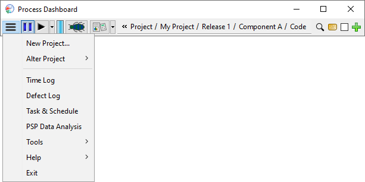

The " " (Configuration) Menu
" (Configuration) Menu
The dashboard provides access to a number of less-frequently-used features
on the configuration menu. This menu is shown with just the icon
"" in order to keep the dashboard
toolbar as small as possible.

The entries on this menu allow access to various tools and editors to give
you complete control of your personal data.
- New Project allows you
to create a personal project for tracking individual work.
- Alter Project allows you to modify the currently selected
project:
- Rename / Relocate lets you choose a different name for the
project. You can also arrange projects into related groups, simply by
entering a group name, followed by a slash, followed by the project
name.
- Relaunch can be used to close a personal project and move the
remaining work to a fresh new project plan. It's useful at the beginning
of a new sprint, cycle, or iteration, when you want to focus on the work
moving forward.
- Close can be used on a personal project that has been finished
or cancelled, to indicate that no more work will be performed there.
- Delete will delete a personal project from your personal
dashboard, or "unjoin" you from a team project.
- Time Log provides an editor that
allows editing of the time data measured in each project and task.
- Defect Log provides a listing of
defects and a method of making changes to the defect data.
- Task & Schedule provides
access to a tool for creating a schedule, and tracking your progress
against it using earned value.
- PSP Data
Analysis provides access to many helpful charts, graphs, and reports
for postmortem analysis of PSP data.
- Tools provides access to a sub menu of less
commonly used tools.
- Preferences
allows you to edit settings that affect the appearance and
behavior of the Process Dashboard.
- Hierarchy
provides access to and simple editing of the project hierarchy.
- PROBE provides access to
a tool to help with the PROxy Based Estimation
method.
- Import and
Export provide
access to tools that allow data to be transferred between dashboards
in a compressed structured file format.
- Database provides
SQL access to the a relational database of team project data
- Mobile App provides information about the mobile companion app for the
dashboard, and helps you to connect a mobile device to your data.
- Save Data Backup
allows you to save a snapshot of your data for archival or
communication purposes.
- Open
Dataset allows you to view the data in a data backup snapshot
that was previously.
- LOC Counter
provides access to a helpful tool for measuring added, deleted, and
modified LOC.
- Help provides access to a sub menu of help-related items.
- Help Topics brings up this help viewer
with the Table of Contents pane selected.
- Search brings up this help viewer
with the Search pane selected.
- Printable Users Manual displays a printer-friendly version of
the Process Dashboard Users Manual.
- Printable Team Users Manual displays a printer-friendly version
of the Team Use Manual.
- About Process Dashboard displays the "about" screen.
- Submit bug report will bring up your web
browser pointed to our website where you can submit any bug you might
find in the Process Dashboard. We want the Dashboard to be the best that
it can be, so feel free to submit a bug!
- Online help forum will bring up
your web browser pointed to our website where you can post
messages to an online help forum. Your questions can be answered
by other users of the Dashboard or by the Dashboard developers
who frequent the forum as well.
- Exit exits the dashboard.